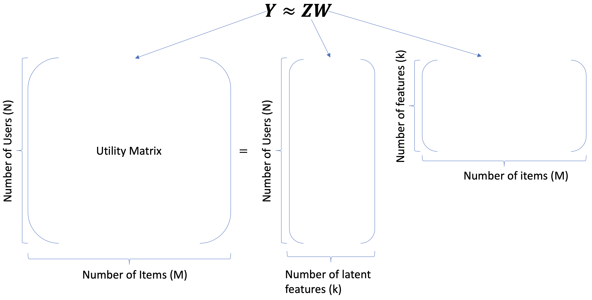
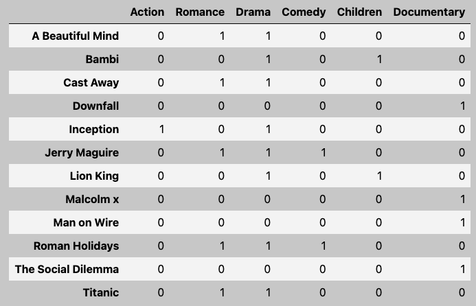

Quiz 2 - 563
Word Embeddings
- Motivation: You can understand a word by the context/company it keeps.
Introduction
- Standard approach: put words in vector space and the distance between words is the similarity between them.
word2vecis unsupervised/ semi-supervised learning because:- closely related to dimensionality reduction + extracting meaninggful representation from raw data
- do not need any labeled data
- running text is used as supervision signal
Word Representation
- One-hot representation:
- Simplest way to represent a word
- OHE vector is a vector of all 0s except for a 1 at the index of the word in the vocabulary
- rows = words in sentence, columns = words in vocabulary
- Disadvantages:
- High dimensionality
- No notion of similarity between words (dot product = 0)
- No notion of context
- Term-term co-occurrence matrix:
- A matrix where each row and column corresponds to a word in the vocabulary
- The value in the i-th row and j-th column is the number of times word i and word j appear together in a context window
- Context window: a fixed-size window that slides over the text (e.g. window size = 2 means 2 words to the left and 2 words to the right)
- Disadvantages:
- High dimensionality
- Sparse
- Does not capture polysemy (multiple meanings of a word)

Dense Word Representations
- Term-term co-occurrence matrix is sparse and high-dimensional
- Better to learn short and dense vectors for words
- Easier to store and train
- Better generalization
- Approaches:
- Latent Semantic Analysis (LSA): Use SVD to reduce the dimensionality of the term-term co-occurrence matrix
- Works better for small datasets compared to word2vec
- Word2Vec: Use neural networks to learn word embeddings
- Latent Semantic Analysis (LSA): Use SVD to reduce the dimensionality of the term-term co-occurrence matrix
Word2Vec
- Create short and dense word embeddings using neural networks
- Idea: Predict the context of a word given the word itself
- Skip-gram: Predict the context words given the target word
- Continuous Bag of Words (CBOW): Predict the target word given the context words
- Two moderately efficient training algorithms:
- Hierarchical softmax: Use a binary tree to represent all words in the vocabulary
- Negative sampling: Treat the problem as a binary classification problem
word2vec: Skip-gram
- Predict the context words given the target word
- NN to obtain short and dense word vectors
- Architecture:

Input layer: one-hot encoded vector of the target word (size = \(V \times 1\))
\(W\) = input layer to hidden layer weights (size = \(V \times d\)) \(\text{hidden} = W^T \times \text{input}\)
Hidden layer: linear transformation (no activation function) to obtain the word vector (size = \(d \times 1\))
\(W_c\) = hidden layer to output layer weights (size = \(V \times d\)) \(\text{output} = W_c \times \text{hidden}\)
Output layer: softmax layer to predict the context words (size = \(V \times 1\))
- Returns a one-hot encoded vector of the context word
The dense representation of the word:
- \(W\): word embedding matrix (size = \(V \times d\))
- This is the main output of the algorithm
- \(W_c\): shared context embedding matrix (size = \(V \times d\))
- \(W\): word embedding matrix (size = \(V \times d\))
Train multiple target+context pairs until the weights converge
Example:
- “Add freshly squeezed [pineapple] juice to your smoothie.
- Target word: pineapple
- NN outputs probability distribution of context words: {squeezed, juice}
- “Add freshly squeezed [pineapple] juice to your smoothie.
Skip-Gram Objective Function
\[\arg \max\limits_\theta \prod\limits_{(w_c,w_t) \in D} P(w_c|w_t;\theta) \approx \prod\limits_{(w_c,w_t) \in D} \frac{e^{w_c.w_t}}{\sum\limits_{\substack{c' \in V}} e^{w_{c'}.w_t}}\]
- Want to get the context word with the highest probability given the target word
- \(w_t\) → target word
- \(w_c\) → context word
- \(D\) → the set of all target and context pairs from the text
- \(P(w_c|w_t;\theta)\) → probability of context word given the target word
- Assumption: maximizing this objective would lead to good word embeddings
Hyperparameters
- Dimensionality of word vectors (\(d\))
- Window size:
- Small window size: captures more syntactic information (e.g. verb-noun relationships)
- Large window size: captures more semantic information (e.g. country-capital relationships)
Pre-trained Word Embeddings
- word2vec
- wikipedia2vec: for 12 languages
- GloVe: based on GloVe algorithm (Stanford)
- fastText pre-trained embeddings for 294 languages
Success of word2vec
Can do analogy tasks
- e.g. man to king as women to (queen)
- MAN : KING :: WOMAN : ?
- solce by: \(\vec{X} = \vec{\text{KING}} − \vec{\text{MAN}} + \vec{\text{WOMAN}}\)
There are some biases in the word embeddings because they are trained on biased data

Other Word Embeddings
FastText
- NLP library by Facebook research
- Includes an algorithm which is an extension to word2vec
- Helps deal with unknown words elegantly
- Breaks words into several n-gram subwords
- Example: trigram sub-words for berry are ber, err, rry
- Embedding(berry) = embedding(ber) + embedding(err) + embedding(rry)
gloVe (Global Vectors for Word Representation)
- Starts with the co-occurrence matrix
- Co-occurrence can be interpreted as an indicator of semantic proximity of words
- Takes advantage of global count statistics
- Predicts co-occurrence ratios
- Loss based on word frequency
Word Embedding Applications
- Using word embeddings for various ML (NLP) tasks
- Before using it for application, need to evaluate quality of word embeddings:
- Examine a number of word pairs for similarity scores (use TOEFL MCQ dataset)
- Examine different analogies for stereotypes and biases they encode
- Visualize embeddings in two dimensions
Document Similarity and Text Classification
- Motivation: You can understand a document by the context/company it keeps.
- Assuming we have reasonable representations of words, we can represent a paragraph/ document as:
- Average embeddings
- Concatenate embeddings
Averaging Embeddings
- Do it with
spacy - We do not necessarily get expected representation of text
- e.g. “Machine Learning” and “Learning Machine” will have same representation
- For long sentences or documents, this can get very noisy (mix of different signals)
Concatenating Embeddings
spacy’smlp.pipe()takes iterable of texts and returns an iterable ofDocobjects.- spaCy uses corpus of text styles from telephone conversations, newswire, newsgroups, broadcast news, weblogs, and conversational telephone speech.
- Might need to train your own for medical, tweets, etc.
word2vec for Product Recommendations
- Not so common, but it’s possible
- Comparisons:
- Words -> Products
- Sentences -> Purchase history of users
- Vocabulary -> Products
Manifold Learning

- Manifold: Lower-dimensional structure embedded within a higher-dimensional space (can be curved/ twisted)
- Manifold Learning: Techniques to learn the structure of the manifold from the data
- Based on the idea of finding low dimensional representation that preserves the distances between points as best as possible
- Real-world data often lies on a low-dimensional manifold
- Common methods:
t-SNE (t-distributed Stochastic Neighbor Embedding)
- t-SNE applies non-linear transformation to the data
- PCA is a linear dimensionality reduction technique
- Mostly used for visualization
- Does not construct an explicit mapping function from the high-dimensional space to the low-dimensional space
- It optimizes the position of the points in the low-dimensional space
- Hyperparameters:
perplexity: Number of nearest neighbors to considerlearning_rate: Step size for gradient descentn_iter: Number of iterations
- Cons:
- slow and does not scale well to large datasets
- random initialization can lead to different results
- sensitive to hyperparameters (perplexity)
- Need to re-run when new data is added
Example with scikit-learn
High-level Algorithm
- Idea: Preserve the similarity between points in high-dimensional space in the low-dimensional space
In high-dimensional space,
- Compute pairwise similarity between points as probabilities
- Similarity b/w \(x_i\) and \(x_j\) is \(p_{ij}\)
- \(p_{ij}\) is calculated using Gaussian distribution, centered at \(x_i\)
- It is the density of \(x_j\) under the Gaussian centered at \(x_i\)
- \(p_{ij}\) high if \(x_i\) and \(x_j\) are close to each other (and low if far)
- Variance \(\sigma^2\) of the Gaussian is influenced by
perplexityhyperparameterperplexityis a measure of effective number of neighbors to consider- Higher perplexity, larger variance, more neighbors
- \(p_{ij}\) is calculated using Gaussian distribution, centered at \(x_i\)
In low-dimensional space,
- Randomly initialize points in low-dimensional space (e.g. PCA)
- Calculates a similar set of pairwise probabilities \(q_{ij}\) in the low-dimensional space
- \(q_{ij}\) is calculated using t-distribution (NOT Gaussian) to mitigate crowding problem
- Makes sure points are not crowded together
- t-distribution has heavier tails than Gaussian
- Assigns a higher probability to points that are far apart
- \(q_{ij}\) is calculated using t-distribution (NOT Gaussian) to mitigate crowding problem
Loss function
- Minimize the difference between \(p_{ij}\) and \(q_{ij}\) using gradient descent (use Kullback-Leibler divergence)
\[KL(P||Q) = \sum_{i,j}p_{ij}\log\left(\frac{p_{ij}}{q_{ij}}\right)\]
Hyperparamter: Perplexity
Perplexity is a measure of effective number of neighbors to consider
- Low: consider fewer neighbors, smaller variance
- High: consider more neighbors, larger variance
Recommender Systems Introduction
- A recommender suggests a particular product or service to users they are likely to consume.
- Why is it important?
- Everything we buy or consume is influenced by this (music, shopping, movies, etc.)
- It is the core of success for many companies (e.g. spotify, amazon, netflix, etc.)
- Tool to reduce the effort of users to find what they want
- Ethical considerations:
- Can lead to filter bubbles (e.g. political views, etc.)
- Can lead to privacy issues (e.g. tracking user behavior)
Data and Approaches to Recommender Systems
- Data:
- purchase history
- user-system interactions (e.g. clicks, likes, etc.)
- features of the items (e.g. genre, price, etc.)
- Approaches:
- Collaborative filtering:
- Unsupervised learning
- Have labels \(y_{ij}\) (ratings for user \(i\) and item \(j\))
- Learn latent features of users and items
- Content-based filtering:
- Supervised learning
- Extract features of items/ users to predict ratings
- Hybrid methods:
- Combine both approaches
- Collaborative filtering:
Recommender Systems Structure
Utility Matrix
- Also referred to as the \(Y\) matrix
- Not actually used in real life because it will be very large (also sparse)
- Train and validation will have same number of rows (users) and columns (items)
- \(N\) users and \(M\) items
- \(Y_{ij}\) is the rating of user \(i\) for item \(j\)

- predict rating \(\neq\) regression or classification:
- It is a different problem because we don’t have a target variable
- We have to predict the missing values in the utility matrix
Creating a Utility Matrix
- Map to get user/item id -> indices (utility matrix)
- Inverse map to get indices -> user/item id
Evaluation
- No notion of “accurate” recommendations, but still need to evaluate
- Unsupervised learning but split the data and evaluate
- SPLIT TRAIN /VALID ON RATINGS, NOT UTILITY MATRIX
- Utility matrix of train and validation will be the same
- Code shown below, not really going to use
y
X_train, X_valid, y_train, y_valid = train_test_split(
X, y, test_size=0.2, random_state=42
)- RMSE:
- It is the most common metric
- It compares the predicted ratings with the actual ratings
Baseline Approaches
Global Average:
- Predict everything as the global average rating
- It is a very simple model
Per-User Average:
- Predict everything as the average rating of the user
Per-Item Average:
- Predict everything as the average rating of the item
Per-User and Per-Item Average:
- Predict everything as the average of the user and the item
KNN:
- Calculate distance between examples usign features where neither value is missing
Other possible approaches
- Clustering:
- Cluster the items, then recommend items from the same cluster
- Graphs and BFS:
- Create a graph of users and items
- Use BFS to recommend items
Collaborative Filtering
- Unsupervised learning
- Intuition:
- People who agreed in the past are likely to agree again in future
- Leverage social information for recommendations
- PCA ?:
- To learn latent features of users and items
- Run on utility matrix
- Problem: missing values
- PCA loss function \(f(Z,W) = \sum_{i,j} ||W^TZ_{ij} - Y_{ij}||^2\)
- Cannot use SVD directly because have many missing values AND missing values make SVD undefined
- Solutions:
- Impute the values to do PCA
- BUT, will introduce bias (distort the data)
- Result will be dominated by the imputed values
- Summing over only available values
- Prone to overfitting
- Collaborative Filtering Loss Function:
- Only consider the available values
- Add L2-reg to the loss function for W and Z
- \(f(Z,W) = \sum_{i,j} ||W^TZ_{ij} - Y_{ij}||^2 + \frac{\lambda_1}{2}||W||^2 + \frac{\lambda_2}{2}||Z||^2\)
- This accounts for the missing values and the regularization terms prevent overfitting (representations are not too complex)
- This improved the RMSE score bby 7% in the Netflix competition
- Optimize using SGD (stoachastic gradient descent) and WALS (weighted alternating least squares)
- Impute the values to do PCA
- Other Notes:
- Result can be outside the range of the ratings
- Will have problems with cold start (new users or items)
- Use
surpriselibrary for collaborative filtering
Z and W in Collaborative Filtering
 
- \(Z\) is no longer the points in the new hyperplane and \(W\) is no longer the weights
- \(Z\): [row = user] Maps users to latent feature of items
- e.g. left for animation, right for documentaries
- \(W\): [col = item] Maps items to latent feature of users
- e.g. top for animation lovers, bottom for documentary lovers
Distance Metrics

- Cosine:
- \(d(x,y) = \frac{x \cdot y}{||x|| \cdot ||y||}\)
- Collinear = 1, orthogonal = 0 (want a value close to 1)
- It is the angle between the two vectors
- Rank (high to low): C, A, B
- Euclidean:
- \(d(x,y) = ||x-y|| = \sqrt{\sum_{i=1}^n (x_i - y_i)^2}\)
- It is the straight line distance between the two points (want smaller distance)
- Rank (low to high): B, C, A
- Dot Product:
- \(d(x,y) = x \cdot y\)
- It is the projection of one vector onto the other
- If vectors are normalized, it is the same as cosine similarity (want larger value)
- Rank (high to low): A, B, C
Content Based Filtering
- Supervised learning
- Does not make use of social network / information
- Solves the cold start problem (can recommend items to new users/items)
- Assumes that we have features of items and/or users to predict ratings
- Create a user profile for each user
- Treat rating prediction as a regression problem
- Have a regression model for each user
Steps in Python (With a movie recommendation example)
Load
ratings_df(containsuser_id,movie_id, andrating)- Also make the user and movie mappers.
Load movie features. This is a matrix of shape
(n_movies, n_features)- Index of movie features is movie id/name
- Features can be genre, director, actors, etc.

Build a user profile. For each user, we will get the ratings and the corresponding movie features.
- Results in a dictionary (key: user, value: numpy array of size
(n_ratings, n_genres))n_ratings: number of movies rated by the user
- Results in a dictionary (key: user, value: numpy array of size
Supervised learning. Train a regression model for each user.
- We will use
Ridgeregression model for this example. Xis movie features (shape =(n_movies, n_features))yis the ratings (shape =(n_movies, 1))
- We will use
- Results in “known” weights for each feature for each user. \(W\) of size
(n_features, 1)for each user.
Collaborative vs Content Based Filtering
| Collaborative Filtering | Content Based Filtering |
|---|---|
| \(\hat{y}_{ij} = w_j^T z_i\) | \(\hat{y}_{ij} = w_i^T x_{ij}\) |
| \(w_j^T\): “hidden” embedding for feature \(j\) \(z_i\): “hidden” embedding for user \(i\) |
\(w_i\): feature vector for user \(i\) \(x_{ij}\): feature \(j\) for user \(i\) |
| (+) Makes use of social network / information | (-) Does not make use of social network / information |
| (-) Cold start problem | (+) Solves the cold start problem |
| (+) No feature engineering required | (-) Requires feature engineering |
| (-) Hard to interpret | (+) Easy to interpret |
| (-) Cannot capture unique user preferences | (+) Can capture unique user preferences (since each model is unique) |
| (+) More diverse recommendations | (-) Less diverse recommendations (hardly recommend an item outside the user’s profile) |
Beyond Error Rate in Recommender Systems
- Best RMSE \(\neq\) Best Recommender
- Need to consider simplicity, interpretatibility, code maintainability, etc.
- The Netflix Prize: The winning solution was never implemented
- Other things to consider:
- Diversity: If someone buys a tennis racket, they might not want to buy another tennis racket
- Freshness: New items (new items need to be recommended for it to be successful)
- Trust: Explain your recommendation to the user
- Persistence: If the same recommendation is made over and over again, it might not be a good recommendation
- Social influence: If a friend buys something, you might want to buy it too
- Also need to consider ethical implications
- Filter bubbles
- Recommending harmful content